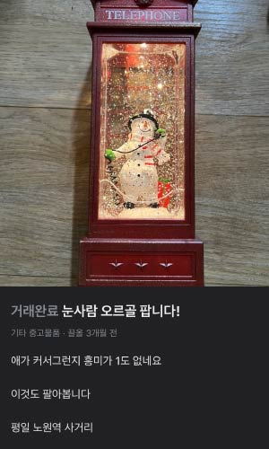
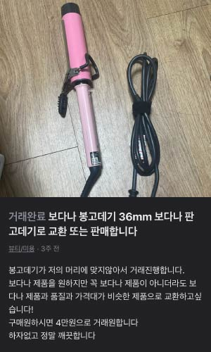

: 중고 거래 애호가의 합리적인 소비 이야기
아, 제 이름이요?
쓰던 거 다 삽니다를 줄여서 쓰다사라고 해요.
그렇다고 진짜 전부 다 산다는 건 아니고요. 종종 필요한 게 있을 때 싼값에 이것저것 사고는 합니다.
물론, 제가 팔 때도 많이 있어요.
이게 다 무슨 소리냐고요?
사실 쓰다사는 제 당근 마켓 아이디입니다.
대학생이 되고 난 뒤 조금이라도 합리적인 소비를 하고자
당근 마켓, 번개장터, 중고나라 등 중고 거래 앱을 많이 애용하게 되었습니다.
그러다 보니 어느덧 중고 거래만 횟수로 50회가 넘어가고, 활동 배지가 15개, 거래 후기도 10개가
되어가네요.
최근에도 역시 중고 거래 앱에서 물건 몇 가지를 구매했는데요.
￦39,800 → ￦10,000
￦100,000 → ￦40,000
크리스마스가 다가오자 좁은 자취방이지만 조금이라도 분위기를 내고싶어
캐롤이 나오는 오르골을 하나 장만하려 하였습니다.
새 상품을 사려 하니 겉보기에 예쁜 건 가격이 너무 비싸고, 싼 건 딱 그 가격으로 보이더군요.
혹시나 하는 마음으로 당근 마켓에 들어가보니 이게 웬 떡, 새 상품으로는 4만 원 정도하는 오르골이
1만 원에 올라와 있는 게 아니겠어요?
그것도 공중전화박스 안에서 눈사람이 전화를 받고 있는, 너무나 귀엽고 겨울과 잘 어울리는
디자인이었습니다.
관심 수는 10개, 다른 누군가가 채가기 전에 재빨리 구매해야겠다고 생각했습니다.
안녕하세요! 구매하고싶은데 혹시 오늘은 안될까요?
안녕하세요 오늘은 제가 밖에 나와 있어서...ㅠㅠ
아 그러신가요 ㅠㅠ 혹시 그럼 내일은 가능하세요..?
내일은 가능합니다! 공릉동 공연초등학교 근처입니다
넵 그쪽으로 갈게요 몇시쯤 괜찮으신가요?
오전중에 오시면 됩니다~
넵 알겠습니다 내일 뵐게요
그렇게 하루 뒤 약속이 잡혔습니다.
다음 날, 약속 장소에 나가보니 한 손에는 말티즈를, 다른 한 손에는
종이봉투를 든 판매자분이 다가 오셨습니다.
아이가 크니까 이제 오르골에 관심이 없다고 아쉬워하시면서도
오르골에 대해 꼼꼼히 설명해주셨습니다.
어젯밤 직접 건전지를 넣어서 켜봤더니 잘 작동했다고 하시길래
그 자리에서 바로 계좌이체로 만 원을 입금하고 집에 돌아왔습니다.
집에 도착하니 거래 후기가 도착하였다는 알람이 울렸습니다.
새해 복 많이 받으세요!
덕분에 좋은 기분으로 구매한 오르골을 꺼내보니 어떠한 오염이나 하자 없이 거의 새 상품처럼 보였습니다.
만족스러워하며 무심코 아래에 있는 스위치를 켰는데 바로 작동이 되면서
캐롤과 함께 공중전화 부스 안으로 눈이 내렸습니다.
보아하니 어제 작동 후 건전지를 넣은 채로 그냥 주셨더군요.
덕분에 건전지를 따로 구매할 필요도 없이
곧바로 사용하여 따뜻한 연말을 보낼 수 있었습니다.
방학 사이에 고향 친구가 서울에 놀러 온 적이 있었다.
평소 헤어 스타일링이란 머리 감고 선풍기로 말리던 게 다인 저는
그날도 샤워를 마치고 선풍기 앞에서 머리를 말리고 있었습니다.
그런데 친구가 고데기를 꺼내 머리를 하더군요
궁금한 마음에 친구의 고데기를 빌려 한 번 써봤는데
정말 머리 하나로도 사람이 많이 달라 보였습니다.
그래서 그날 이후 ‘고데기를 하나 사야겠다!’라고 생각했습니다.
유튜브에 검색해보니 봉고데기를 많이 쓰길래 역시나 이 날도
당근 마켓에 봉 고데기를 검색했습니다.
종류가 정말 다양한데 그중에서도 보다나라는 브랜드가 많이 보이더군요.
인터넷에 검색해보니 원가가 거의 10만 원인 아주 고가의 브랜드였습니다.
그런데 당근 마켓에 올라온 가격은 3만 원 후반부터 6만 원까지 훨씬 저렴하더라구요.
한참을 고민하다 개강 전에는 구매하고 싶어
보다나 봉고데기 36mm를 4만 원에 판매하는 글에 채팅을 보냈습니다.
구매하던 당시에 가장 싼 매물이기도 했고, 색은 좀 마음에 안 들었지만
가까운 곳에서 직거래를 하고 싶었기에 철길에서 직거래를 할 수 있는 분으로 연락을 드렸습니다.
직거래로 구매할 수 있을까요? 언제 시간 가능하실까요?
8시쯤 괜찮으신가요?
네네 가능해요! 라라브레드 앞으로 가면될까요?
넵
기왕 철길로 나가는 겸 다른 할 일들도 해결하고 오자 해서 약속시간보다 일찍 출발해 밥도 먹고,
네일아트도 받고, 올리브영 구경까지 했는데 시간이 너무 안 가더라고요.
비도 오는데 밖은 점점 추워지고 아직도 시간이 2시간이나 남았길래
결국 참지 못하고 다시 채팅을 보냈습니다.
저 혹시 죄송한데 제가 지금 근처라
혹시 좀 더 일찍 거래는 어려우실까요??
몇시쯤 원하세요??
전 판매자분 되는 시간에서 빠를수록 좋습니다..!
7시 20분 어떠세요??
네 괜찮습니다 감사해요
마지막 채팅을 하고도 시간이 30분가량이 남아 약속 장소였던 라라 브레드에 들어갔습니다.
초코 소금빵과 카페라떼를 시키고 시간을 때우고자 했죠.
그런데 그저 시간을 때우러 들어온 카페였는데 분위기가 너무 좋은 거 있죠?
창가 자리에 앉아 빗소리를 들으며 앞에는 제가 가장 좋아하는 카페라떼까지 마시니
정말 천국이 따로 없었죠.
시간을 때우다보니 어느덧 약속시간이 1분 정도가 남았고
당근으로 먼저 도착했다고 채팅을 하고 밖으로 나갔습니다.
그런데 저보다도 판매자분이 먼저 도착해계시더군요.
민망했습니다.
그 분은 먼저 도착했다는 제 연락을 받고 두리번거리고 있었고,
제가 라라 브레드 문을 열고 나오자 서로 멋쩍게 웃으며 인사를 나누고 거래를 했습니다.
집에 돌아와 고데기를 확인해 보니 전선 부분의 스티커가 살짝 떨어져 흔적이 남은 것을 제외하면
흠집 하나 없이 아주 깨끗하고 열도 잘 들어오더군요.
봉 고데기는 처음 써봤는데 생각보다 쓰기도 어렵지 않았고
예쁘게 머리가 잘 말려서 기분이 좋았습니다.
게다가 정가에서 거의 6만 원 정도를 더 싸게 구매했으니 아주 뿌듯했습니다.
그 덕에 개강하자마자 바로 열심히 고데기를 하면서 등교하고 있습니다.
중고거래, 한 번도 안 해본 사람은 있어도 한 번만 해본 사람은 없을 겁니다.
솔직히 하다 보면 예의 없는 사람도 종종 있긴 합니다.
하지만 요즘 뭐하나 사려고 하면 터무니없이 비싸서 망설여질 때가 있잖아요?
그럴 때에 중고라고 주저하지 말고 한번쯤 이용해 보세요.
좋은 상품을 좋은 가격에 구매했을 때 오는 소소한 행복을 경험할 수 있습니다.
생각보다 새 상품도 많으니까요.
눈에 불을 켜고 찾아보면 새 상품을 정가보다 훨씬 저렴하게 판매하는 매물도 꽤 많습니다.
구매하는 건 시간 싸움이니까 그 타이밍을 절대 놓치지 마세요!
나름 매너 온도 올리는 재미도 있다고요.
그런데 도대체 매너 온도가 100도이신 분들은 정말 어떤 삶을 살아오신 걸까요?
그럼 저는 이만 오늘도 매너 온도 올리러 먼저 가보겠습니다.